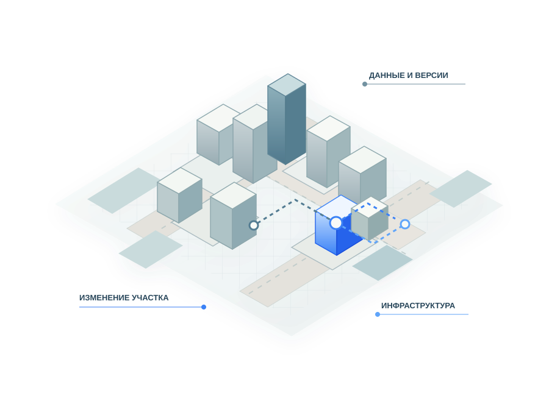

01 / 04 · Территория
Город растёт
Новый квартал меняет нагрузку на дороги, сети и социальные объекты. Эти изменения связаны между собой, даже если данные о них ведут разные участники.
Территория
От разрозненных документов — к связанным данным, официальным версиям решений и ясной истории изменений.

НОТИМ предлагает отрасли и государству обсудить общие принципы цифрового управления развитием территорий.
Цель — улучшить градостроительные процессы, в том числе через необходимые изменения нормативной базы. Не просто заменить бумагу экраном, а устранить разрыв между подготовкой решения, его утверждением и применением.
Путь — согласовать правила работы с данными и официальными версиями решений, затем поэтапно внедрять их в практику. Концепция ниже описывает эти принципы и вопросы, которые ещё нужно проверить.
Новый квартал меняет нагрузку на дороги, сети и социальные объекты. Эти изменения связаны между собой, даже если данные о них ведут разные участники.
Чтобы выбрать участок и подготовить строительство, приходится сверить землепользование, транспорт, инженерные мощности и действующие решения. Каждый шаг имеет своего ответственного.
Сегодня утверждённое содержание нередко переносят из документов в системы вручную, а после изменений снова сверяют копии. Ошибки и поздние противоречия возникают на стыках.
Целевой порядок — вести структурированное содержание решения, видеть его статус и историю, однозначно связывать утверждённую версию с правовым актом. Решение по-прежнему принимает уполномоченный субъект.
В дальнейшем здесь может быть короткий ролик; пока последовательность показана иллюстрированными слайдами.
У каждого решения есть содержание, статус, правовое основание и время действия. Сведения о территории должны обновляться вместе с подтверждёнными изменениями.
Проектная, принятая и действующая редакции не равнозначны. Для каждой версии должны быть известны её содержание, статус, источник и история изменений. Это позволяет точно установить, какой вариант прошёл процедуры и был утверждён.
ПодробнееИнформационная модель территории, или ИМТ, — постоянно обновляемое цифровое представление фактического состояния территории, действующих решений и проектных намерений. Она показывает их связи, источники и историю. ИМТ не сводится к 3D-карте, отдельному продукту или разово собранной базе.
ПодробнееДве условные ситуации показывают, как связанные данные и версии помогают подготовить решение. Это иллюстрации, не описание действующих сервисов.
При подготовке документации по планировке территории доступные действующие сведения и формализованные требования могут выявить возможное противоречие до утверждения проекта. Замечание должно указывать затронутый объект, применённое правило и версии исходных данных.
ПодробнееПредлагаемое изменение параметров застройки участка требует оценки транспортной доступности, инженерных мощностей и социальной инфраструктуры. При этом необходимо различать действующие решения, проектные намерения и сведения, достоверность которых ещё предстоит подтвердить.
ПодробнееСначала — непрерывный жизненный цикл решения и базовая совместимость. Затем — более широкое обновление данных, обоснования и аналитика.
На первом этапе необходимо связать официальную версию данных, процедуры, акт и последующее применение решения. Предметный приоритет — документация по планировке территории: утверждённое содержание должно быть однозначно связано с актом и доступно для дальнейшей работы без повторного ручного переноса.
Следующие этапы расширяют обновление отраслевых сведений, связи между решениями и контроль их реализации. Аналитика, моделирование и проверенные сценарии ИИ развиваются по мере готовности данных и правил. Исследовать их можно параллельно, но непроверенный инструмент не должен становиться обязательным основанием решения.
Эффект требует проверки на конкретных процессах и оценки полной стоимости жизненного цикла. Высвобождение времени не равно денежной экономии.
Эффект оценивается с учётом переходных и регулярных затрат, а не по неподтверждённым цифрам экономии.
Концепция задаёт общие требования к смыслу и происхождению данных, но оставляет место региональным, отраслевым и коммерческим решениям.
Региональные системы, профессиональные инструменты, отраслевые модели и официальные реестры могут участвовать в общем контуре. Для обмена им нужны согласованные правила: содержание сведений, версия, статус, источник и история изменений должны сохраняться при переходе между системами.
Концепция не предписывает одного поставщика, продукта или физического хранилища. Обязательное ядро совместимости ещё предстоит конкретизировать и проверить. Практические случаи и аргументированная критика должны участвовать в этой работе.
Краткая версия показывает логику предложения. Полный текст раскрывает правовые условия, ответственность, этапность и открытые вопросы.
Полный текст описывает правовые условия, роли участников, порядок перехода и подход к оценке эффекта. Он фиксирует не только целевую модель, но и ограничения, которые требуют дальнейшей проверки.